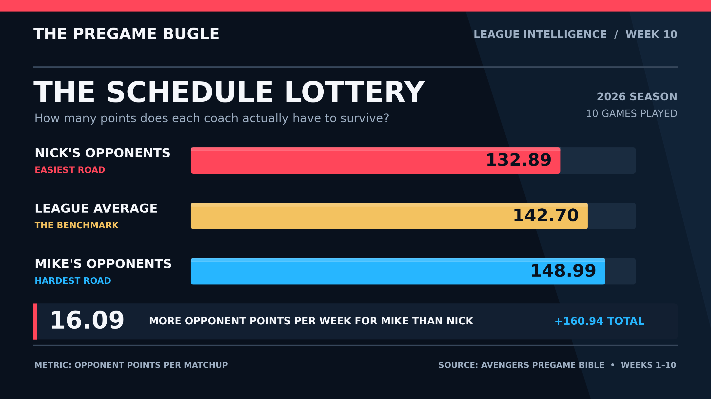

NICK'S 8–2 RECORD CAME WITH A FUCKING SAFETY NET.
The schedule lottery: four dead-last opponents, fourth-ranked lineup accuracy, and a 160.94-point advantage over Mike's road.

There are good fantasy football teams. There are lucky fantasy football teams. And then there's Nick, who apparently selected his opponents from the clearance aisle of a fantasy football league.
He's 8–2. But four of his ten opponents scored dead last in the entire league in the very week they faced him. Not bottom three. Not slightly below average. Dead. Fucking. Last.
EXHIBIT A: THE FOUR HORSEMEN OF THE FREE WIN
In Week 1, Aaron scored 120.16 against Nick. In Week 2, Travis delivered a catastrophic 82.52. In Week 5, Jake managed 91.40, and Nick himself needed just 101.76 to collect the win. In Week 10, Alyssa put up 117.70 against Nick's 165.66.
That's not an easy schedule. That's an escorted tour of the league's weekly emergency exits.
EXHIBIT B: THE DIFFERENCE BETWEEN NICK AND MIKE
Nick's opponents have scored just 132.89 points per game, the lowest average in the league. The entire league averages 142.70. Meanwhile, Mike's opponents average 148.99—the toughest schedule by points against.
That's 16.09 more points Mike has had to survive every single week, or 160.94 total points over the same ten games. Nick gets a hammock. Mike gets a steel chair to the forehead and a notice that the payment is overdue.
EXHIBIT C: THE COACHING RÉSUMÉ
Nick isn't a bad team. He's scored 1,531.04 points and would have won 46 of 70 possible head-to-head matchups in all-play scoring through ten weeks. His offense deserves respect. But through Week 9—the latest week with verified optimal lineup data—his 91.08% coaching accuracy ranked fourth out of eight, with zero perfect weeks.
That is competent, middle-of-the-pack lineup management. Not the sacred coaching genius an 8–2 record would have you believe.
Mike, meanwhile, owns a 5–5 record while playing the highest-scoring opponents in the league. The most honest summary of their seasons: Nick is good and fortunate; Mike is good and thoroughly fucking cursed.
OFFICIAL BUGLE VERDICT
NICK ISN'T A FRAUD BECAUSE HE WINS. HE'S A FRAUD IF HE PRETENDS HIS SCHEDULE HAS NOTHING TO DO WITH IT.
Now Mike waits on the other side of the bracket. If Nick wants to prove the schedule-luck committee wrong, he should try beating an opponent who doesn't spend Sunday afternoon setting his own lineup on fire.